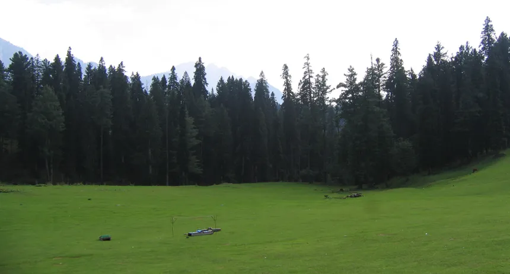
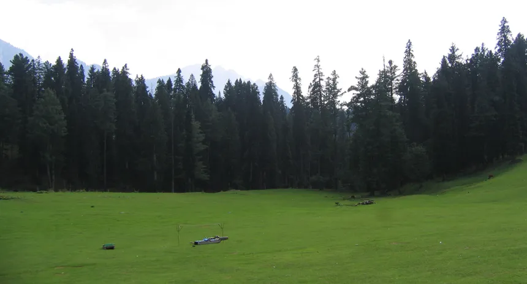
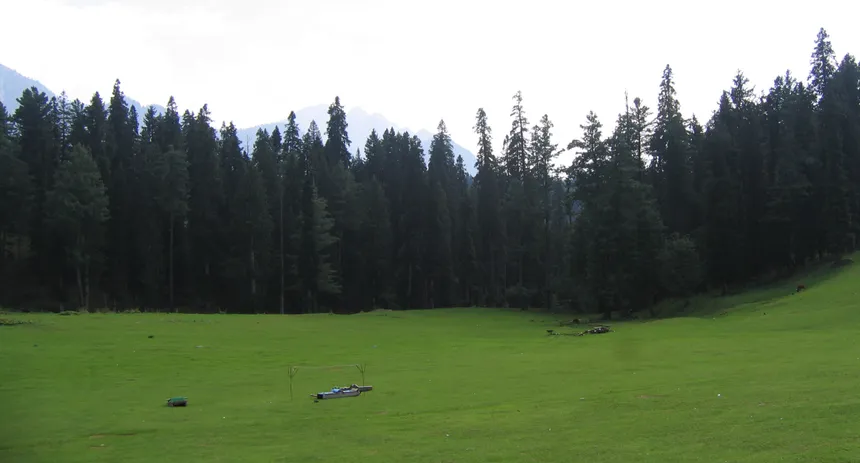
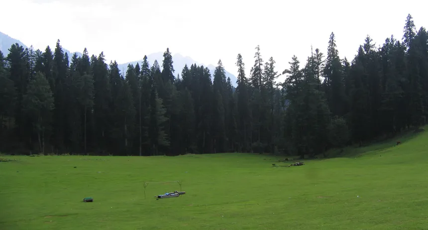

 

Pahalgam is considered as an illustration of the heaven on earth which is situated at an altitude of 2740 m. It is situated at distance of 95 Kms from Srinagar and surrounded by dense forests, beautiful lakes and meadows of flowers. Tranquility and serenity are the other names of Pahalgam.
This tiny town is known to suck out all the stress of every visitor and is therefore counted amongst the best places to visit in Kashmir.
June to October, and for snow December & January would be the best
Visit to Betab and Aru Valleys, Horseback riding, canoeing